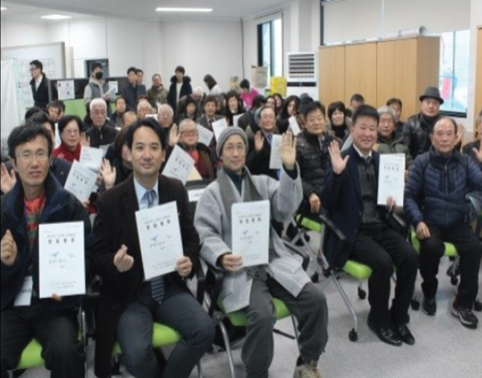
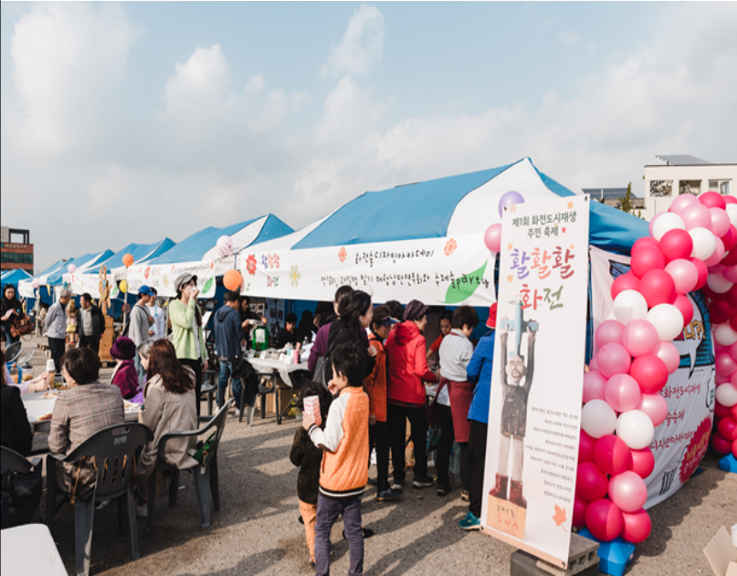
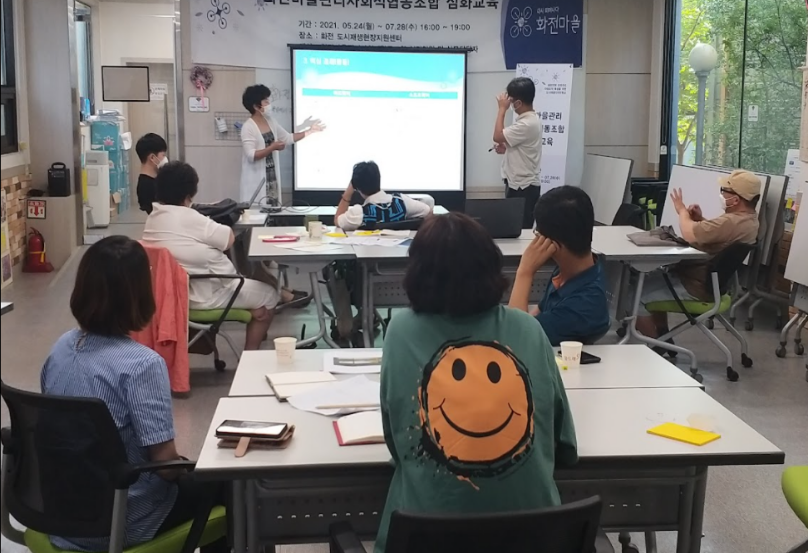
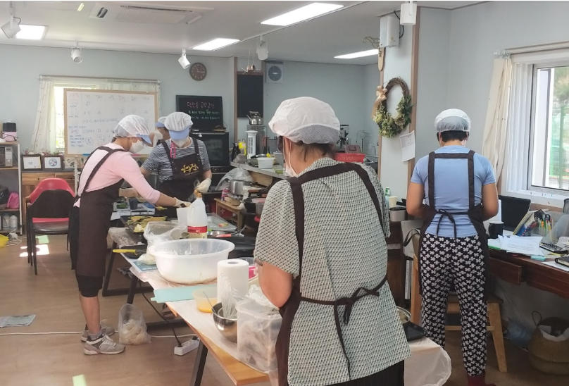

로그인
회원가입
사이트맵
Toggle navigation
화전도시재생
화전마을관리사회적협동조합
문화/행사
사업마당
열린마당
About
화전마을관리
협동조합
설립배경 및 목적
비전 및 목표
조직개요
화전마을관리협동조합
> 설립배경 및 목적
설립 배경
2017년 화전 지역이 도시재생뉴딜사업으로 선정
2018년 12월에 진행된 총회를 거쳐 화전도시재생주민협의체 탄생
주민협의체 임원을 중심으로 마을관리사회적협동조합 교육 및 발기인단 모집 등을 진행
화전도시재생주민협의체 바탕으로 화전마을관리사회적협동조합 설립




설립 목적 및 역할
유지 관리
도시재생 사업을 통해 조성된 거점 공간의 유지 관리
지속적인 물리적 환경개선
공동출자·공동생산·공동소비
마을조합원뿐만 아니라 마을 공동의 이익 추구
선순환체계 구축
지역주민들이 필요로 하는 재화 및 서비스 제공
이에 따른 수익 일부를 지역사회에 재투자
주민·조합원 역량강화
공동체 회복 및 일자리 창출
지역 내 거버넌스 구축
지속 가능한 성장 동력 확보
개인정보처리방침윤리경영
고객서비스헌장
미션/비젼
기업윤리리프스
사이트맵
[10540] 경기도 고양시 덕양구 화랑로 3 (우), 화전도시재생센터 / TEL : 031-8075-3197
패밀리사이트
원당도시재생센터
삼송도시재생센터
일산도시재생센터
능곡도시재생센터
성산혁신지구도시재생센터
이동
↑